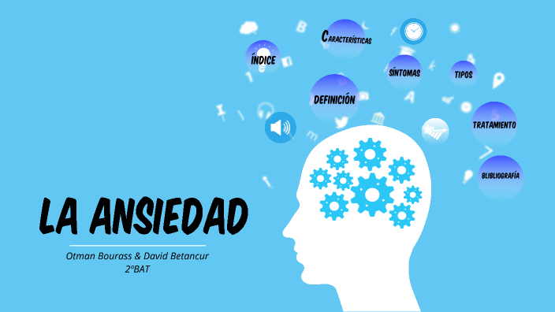

angel cara nalga La palabra psicosis se utiliza para describir los trastornos que afectan la mente, en los que se ha perdido cierto contacto con la realidad. Cuando alguien se enferma de esta forma, se le denomina episodio psicótico
La ansiedad es una emoción normal que se experimenta en situaciones en las que el sujeto se siente amenazado por un peligro externo o interno. Habría que diferenciar entre miedo (el sujeto conoce el objeto externo y delimitado que le amenaza y se prepara para responder) y ansiedad (el sujeto desconoce el objeto, siendo la amenaza interna y existiendo una dificultad en la elaboración de la respuesta). La ansiedad es anormal cuando es desproporcionada y demasiado prolongada para el estímulo desencadenante.
